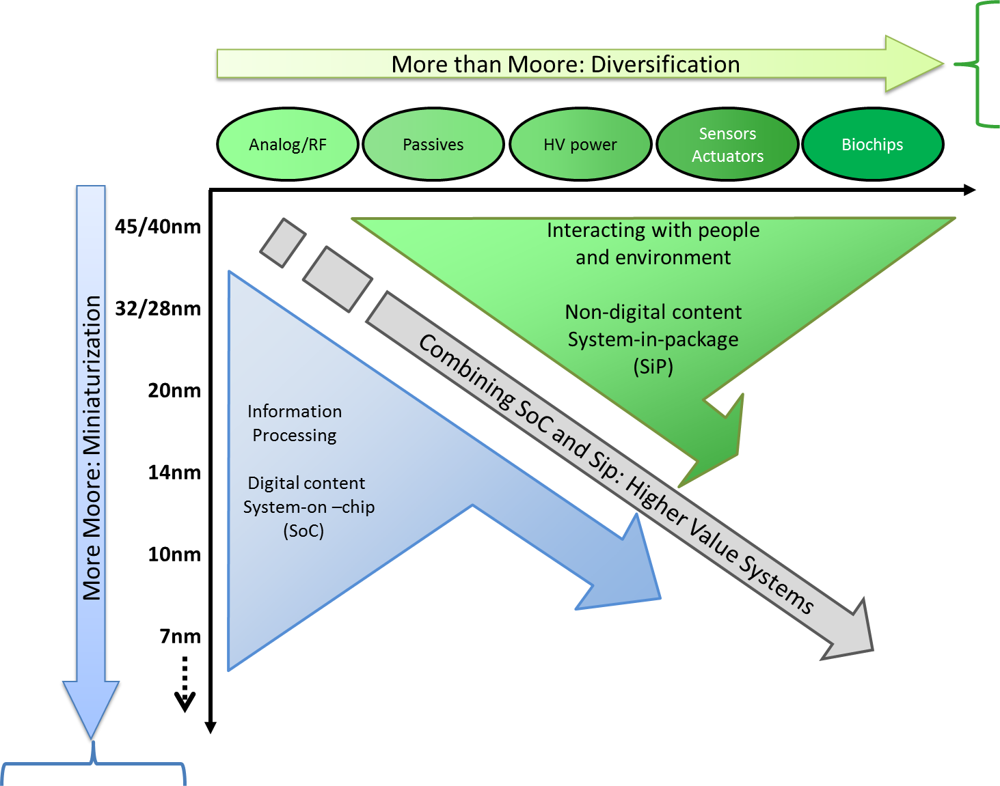
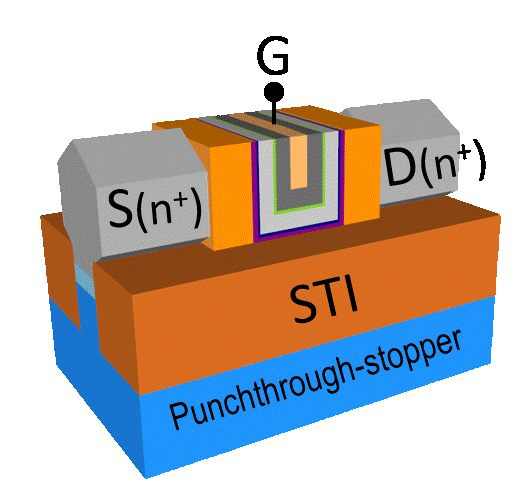
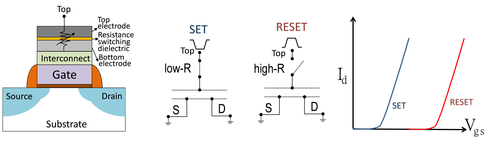

-
研究方向
半導體自1960年代以來演變至今近一甲子，其技術推動人類社會快速演變堪為自有文明歷史以來最深刻之改變。

而這之中最重要的便是電晶體的發明使得電訊號首次能夠被人類安排與使用來實現各式各樣的功能，比如做為電訊號的開關 ，或是放大與縮小和調變電訊號，從而能處理與計算和儲存電訊號，也可傳輸與接收電訊號，成為現代科技發展之基石。 隨著人類社會複雜地演化與文明生活渴求更便利更有效率的生活方式，人類需要電晶體的機會與場合越來越多，因此積體電路之發明 便是自然而然地迎合這樣之趨勢，讓有限與微小的矽基面積上聚合上億顆電晶體，在這些電晶體不同地搭配與組合下， 半導體技術成功地滿足現代社會各式各樣地需求，比如大量繁重的文書處理，精密的工業自動化與製造，各種精巧的隨身攜帶 電子用品能夠監控身理數據，與行動電話....等等。這是由於半導體的積體電路隨著技術的發展與演進可以提供更精巧且功能更強大的電晶體。 這便是電晶體之"微縮"(scale down)。
電晶體之微縮依循著摩爾定律(Moore's law)，摩爾定律不是一個物理或化學之嚴謹的定律。與此相反 摩爾定律是用來描述與歸納半導體產業與人類社會交互作用下的經濟行為，所以摩爾定律是一項經濟之定律，它描述著電晶體之面積必須隨著 一定時間縮小，從而使得電晶體越來越細小越來越便宜但功能卻越來越強大。 隨著半導體的從業人員大量地投入研發工作，電晶體已經微縮至20奈米(一奈米等於十個負九次方米)以下逐漸地面臨到物理極限，而減慢了 微縮的腳步，但人類對未來的想像與美好生活的憧憬是沒有極限且不會停止的，因此另一股趨動半導體技術演進地力量油然而生，在既有地技術平台上 附加更多價值，產生更多應用，結合其它領域之技術利用半導體來實現，比如生醫領域，人工智慧領域，機械領域，等等，而附與半導體新的生命與面相 這便是"超越摩爾定律"(More than Moore)所要講述的。下圖是著名的"Moore's law X More than Moore"圖，y軸是Moore's law講地是電晶體之微縮以追求更小面積更便宜功能越強大之晶片，目前已觸及7nm， 還會繼續往5nm, 3nm, 2nm, 1nm繼續延伸；而X軸則是More than Moore讓單一顆晶片實現更多功能賦予更高價值。
本實驗室即是依循這兩個面向，除了針對固有的電晶體微縮化所遭遇之課題繼續深入地鑽研與研究，包含了三維電晶體(FinFET)和次世代之電晶體-穿隧型電晶體(Tunnel FET-TFET)以外；亦強調在More than Moore上 的應用價值，比如嵌入式記憶體(embedded memory)和類神經網路計算(Neuromorphic Computing)...等等。除了固有的半導體物理，固態物理，和量子力學必須了解之外，本實驗室更強調活用這些機制在半導體上實現各式各樣之創新應用，為台灣與世界奉獻一己之力，歡迎加入我們的行列。
-
新一代奈米CMOS元件FinFET結構設計及製作
- FinFET 新結構應用在System on Chip 各種規格上應用設計
- 最新式元件與製程模擬方式分析並將其模式化
- 製程與操作造成之電性擾動之研究探討
- 三微電晶體奈米通道之類彈道傳輸機制之研究探討
- 三維電晶體自發熱現象之研究探討
- 三維電晶體High-K氧化層之研究探討
-
低功耗穿隧式電晶體結構模擬與製程(Tunneling FET)

- 改變傳統場效電晶體電性機制，突破傳統次臨界斜率小於60mV/dec。
- 有更小的漏電流，可應用於低功耗系統的應用上，本團隊持續研發新穿隧結構來提高各方面的性能
- 面穿隧電晶體之設計(Face-TFET)。
- TFET為基底之電路設計。
-
新世代電阻式隨機存取記憶體，可靠度與製程
- 1S1R Cross-bar RRAM。
- 1T RRAM。
- RRAM操作機制與損害之物理分析。
- RRAM輔助之邏輯電路。
-
嵌入式記憶體設計、元件陣列之可靠性研究

- 單閘極電阻式快閃記憶體。
- 介電質熔絲崩潰機制單次編程記憶體。
- 三維電晶體雙極性電阻式快閃記憶體。
- 嵌入式記憶體電路設計。